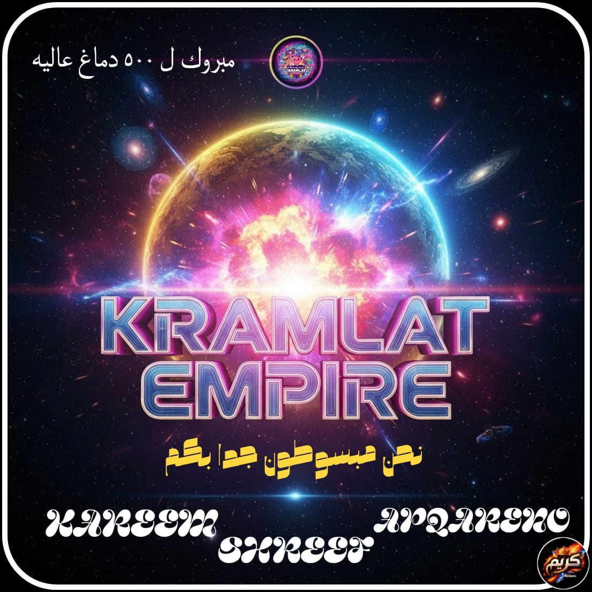
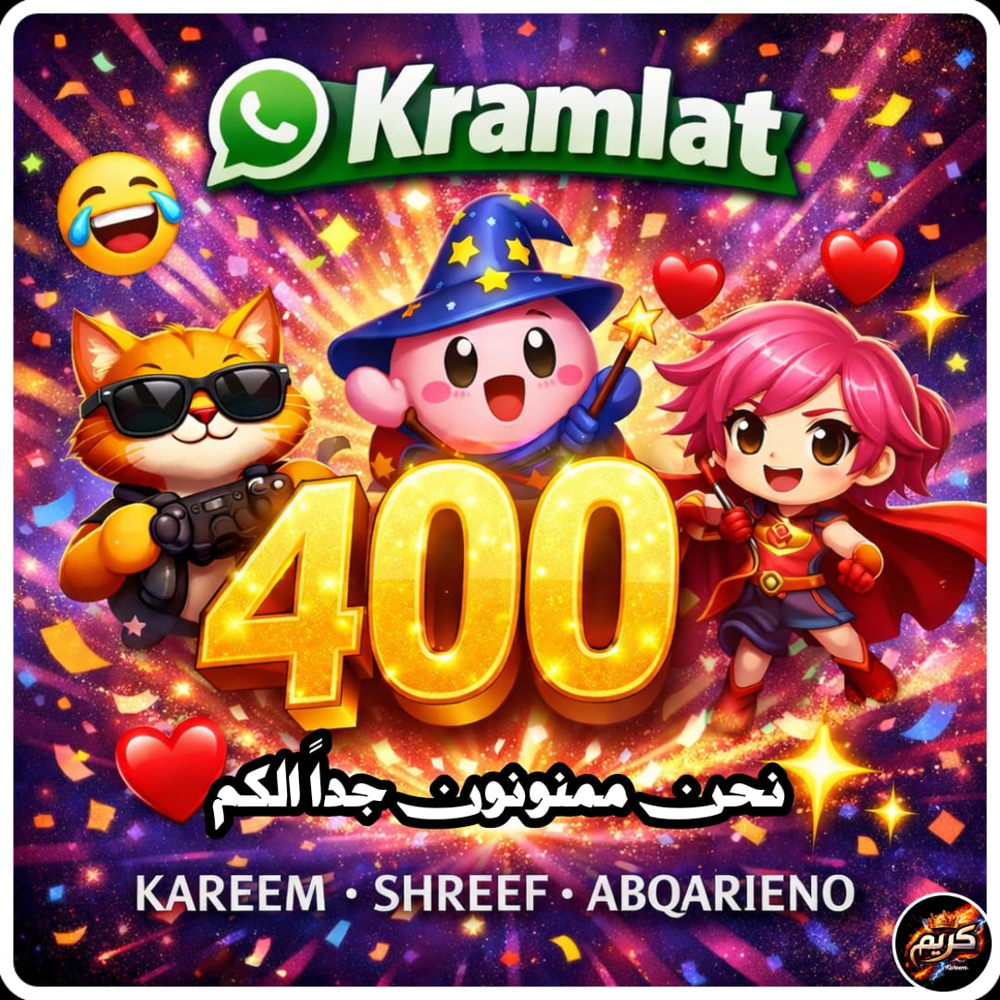
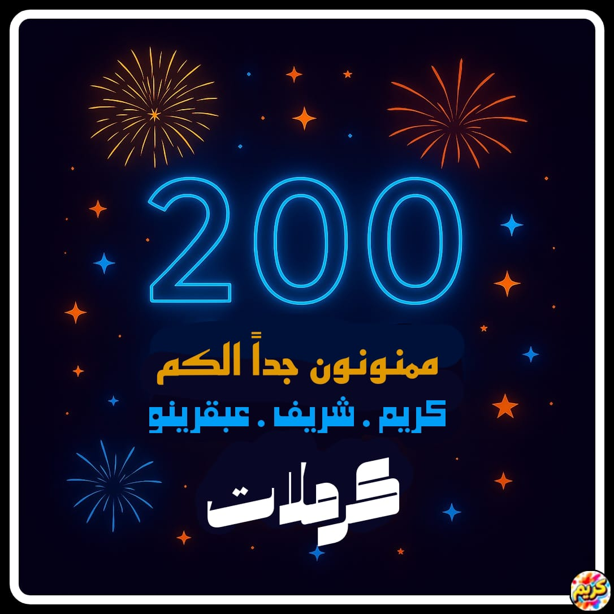
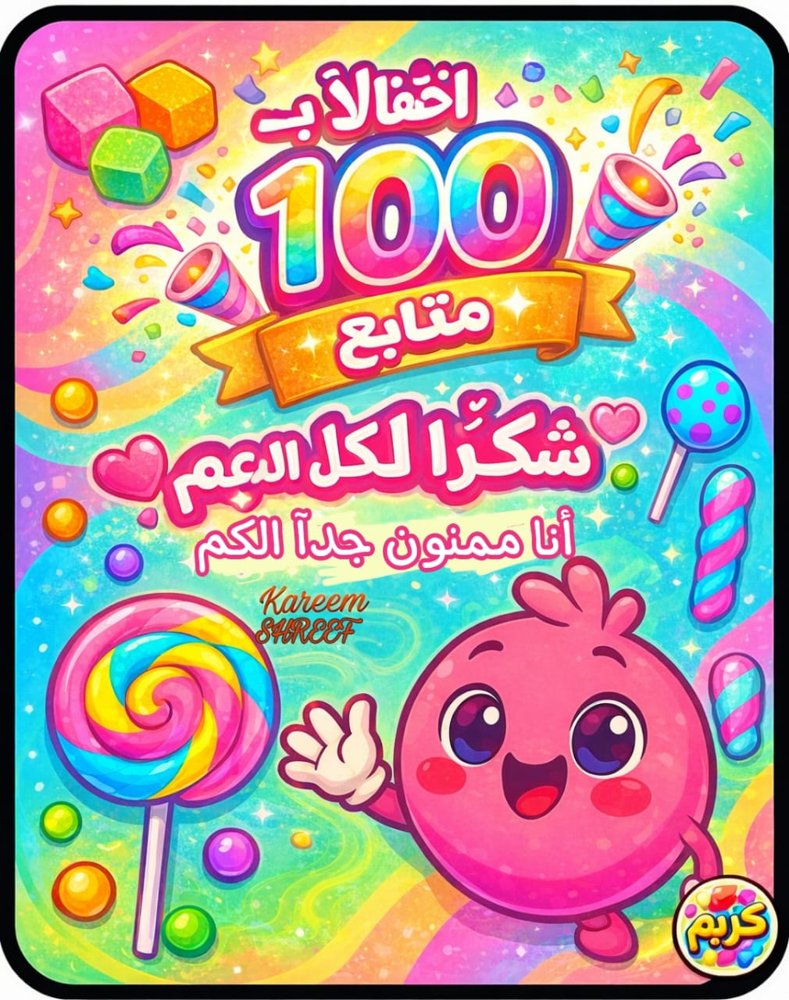

سجل الاحتفالات الكبرى 🚀
محطات تاريخية لا تُنسى في مسيرة مجرة كرملات، من المئة الأولى حتى القمة الملكية للـ 500 وما بعدها!

👑 جمدان الـ 500 الملكي
قمة المجد الكوني والتوسع الفضائي! تتويج النصف ألف بطل في إمبراطورية كرملات مع إطلاق هوية النيون العصرية وموقع الحسم الرسمي.

💎 احتفال الـ 400 الماسي
حفلة ماسية شهدت انطلاق أولى مسابقات فك الشفرات والقصص المرعبة التفاعلية، وترسيخ أركان الإمبراطورية الفضائية بين المجتمعات.
🚀 احتفال الـ 300 الناري
انفجار بركاني من الضحك والميمز الحصرية! وصل جيش كرملات لمرحلة الصخب العارم والتحول من قناة عادية إلى مجرة موازية للفوضى الإبداعية.

🔥 احتفال الـ 200 الأسطوري
مضاعفة العدد الأول وتأكيد أن إمبراطورية كرملات جاءت لتبقى وتتحدى الملل في كل زاوية من أرجاء الإنترنت.

🎉 احتفال الـ 100 المشهود
البذرة الأولى والنواة الذهبية. مئة بطل آمنوا بالرؤية الفضائية للمؤسس كريم عمر وبدأت معهم أعظم رحلة للضحك والغموض.
الخط الزمني لصعود المجرة ⏳
رحلة من التحدي والشغف بنيت خطوة بخطوة بأيدي القادة والشعب المخلص.
تأسيس مجرة كرملات
انطلاق الفكرة برؤية كريم عمر لكسر النمطية وتقديم محتوى ترفيهي فضائي استثنائي.
انضمام القيادة الميدانية
دخول العميل شريف والعبقري مصطفى وضبط منظومة النشر والإنتاج البصري الاحترافي.
موقعة الحسم والبطولات الكبرى
إطلاق نظام المسابقات التفاعلية وألغاز فك الشفرات وتتويج أبطال لوحة الشرف.
المقر الرقمي الشامل 2026
التحول لمنصة ويب متكاملة تجمع الألعاب، الإذاعة الحية، ولوحة التحكم الفورية.